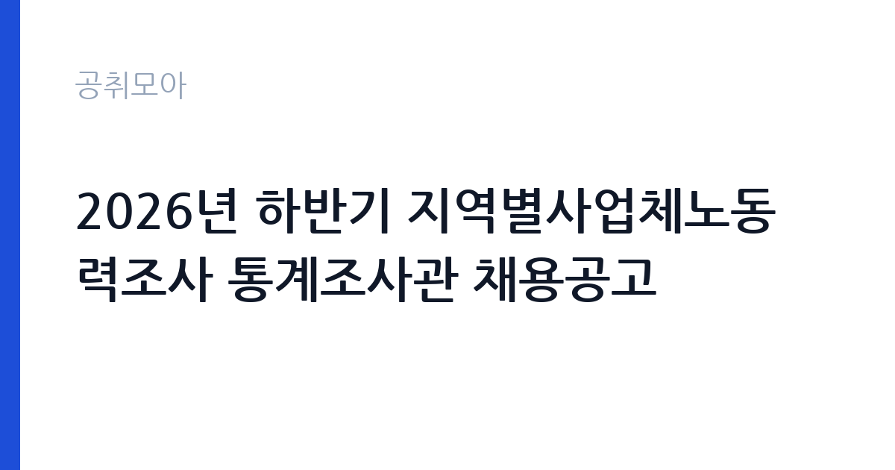

[국가기관] 2026년 하반기 지역별사업체노동력조사 통계조사관 채용공고
고용노동부 서울지방고용노동청 서울북부지청 · 서울 · 마감 2026-10-15 (D-10) · 출처 나라일터

한눈에 보는 모집 조건
| 기관 | 고용노동부 서울지방고용노동청 서울북부지청 |
|---|---|
| 공고명 | 2026년 하반기 지역별사업체노동력조사 통계조사관 채용공고 |
| 고용형태 | 정규직 |
| 근무지 | 서울 |
| 게시일 | 2026-10-02 |
| 마감일 | 2026-10-15 (D-10) |
지원자격, 이렇게 읽으세요
- 통계조사관 12명
- 접수 ~2026-10-15 마감
- 세부 조건은 원문 공고문 확인
통계조사관 채용은 학력과 전공 제한이 적은 경우가 많으며, 사업체 방문 조사 경험이나 통계조사 유경험자를 우대하는 경우가 많습니다. 장애인전형 1명은 별도 전형으로 선발됩니다. 운전 가능 여부나 노트북 활용 능력이 실무 조건이 될 수 있으므로 원문 공고문과 직무설명자료를 반드시 확인하셔야 합니다.
이 공고의 포인트
이 공고의 포인트는 12명이라는 모집 규모입니다. 단일 공고로는 큰 편이라 서류 통과 폭이 넓습니다. 지역별사업체노동력조사는 국가승인통계로, 조사원 경력은 이후 각종 통계조사와 공공기관 경력 지원에 활용할 수 있습니다. 접수 마감은 2026년 10월 15일 오후 6시입니다.
전형은 어떻게 진행되나
전형은 입사지원과 서류전형, 1차 면접을 거쳐 최종합격자를 정합니다. 접수는 고용24 누리집의 전자채용마당을 통해서만 가능하며 우편과 방문, 전자우편 접수는 받지 않습니다. 서류 접수 기간은 2026년 10월 2일부터 10월 15일 오후 6시까지입니다. 담당 부서는 지역협력과이며 연락처는 02-950-9745입니다.
원문에서 확인한 전형 방식
서울북부고용노동지청 통계조사관을 아래와 같이 공개모집하오니 고용행정 분야의 전문성과 경륜을 갖춘 분들의 많은 지원를 바랍니다. ○ 채용분야 : 기간제 통계조사관(지역별사업체노동력조사) ○ 채용기간 : 2026.11.2.(월) ~ 2026.12.17.(목) ○ 채용인원: 12명(일반전형 11명, 장애인전형: 1명) ○ 선발방법 : 입사지원 > 서류전형 > 1차면접 > 최종합격 ○ 접수방법: 고용24(www.work24.go.kr) 홈페이지의 e-채용마당을 통해서만 접수 가능(메일, 우편, 방문접수 불가) ○ 서류접수기간: 2026.10.2.(금)~2026.10.15.(목) 18:00 까지 ○ 담당부서(연락처) : 지역협력과(02-950-9745) 기타 자세한 사항은 첨부된 공고문을 참조하시기 바랍니다.
이런 분께 추천해요
- 사업체 방문 조사나 통계조사 경험을 쌓고 싶은 분
- 11월부터 12월 중순까지 단기 근무가 가능하신 분
- 서울 강북 지역 사업체 현장 방문이 가능한 분
지원 전 체크리스트
- 고용24 전자채용마당으로만 접수되므로 회원가입과 이력서 등록을 미리 하셔야 합니다
- 마감 시각이 10월 15일 오후 6시이므로 당일 오후 접수는 피하셔야 합니다
- 장애인전형 지원 자격은 원문 공고문에서 별도로 확인하셔야 합니다
- 채용 기간 11월 2일부터 12월 17일까지 근무 가능 여부를 확인하셔야 합니다
모집 일정과 제출 타이밍
공고 게시일은 2026년 10월 2일이며 서류 접수는 10월 15일 오후 6시에 마감됩니다. 이후 서류전형과 1차 면접을 거쳐 11월 2일 채용이 시작됩니다. 조사 준비 교육이 채용 초기에 진행되는 것이 일반적이므로 합격 후 일정도 비워 두시기 바랍니다.
직무 이해하기: 국가기관
통계조사관은 지역 내 표본 사업체를 방문해 종사자 수와 입직, 이직, 부족 인원 같은 노동력 현황을 조사표에 따라 묻고 기록합니다. 조사 전에는 조사표 작성 요령과 응대 수칙 교육을 받고, 조사 중에는 응답 거절 사업체에 대한 설득과 재방문을 수행합니다. 수집된 자료는 지역 고용정책과 인력수급 분석의 기초자료로 쓰이므로 정확성이 생명입니다.
자기소개서 작성 팁
자기소개서에는 사람을 직접 만나 자료를 수집했던 경험을 중심으로 적으시기 바랍니다. 방문 영업이나 실태조사, 민원 응대 경험을 언급하시면 직무 연관성이 드러납니다. 거절 상황에서도 끝까지 완수했던 사례가 있다면 조사원으로서의 끈기를 보여주는 좋은 소재가 됩니다.
면접 준비 포인트
면접에서는 사업체 담당자가 조사를 거부할 때 어떻게 대응할지 묻는 상황 질문이 나올 가능성이 높습니다. 통계의 공익성과 비밀 보장 원칙을 근거로 설득하겠다는 답변 틀을 준비하시기 바랍니다. 6주간의 현장 근무 의지와 서울 강북 지역 이동 가능 여부를 분명히 밝히시기 바랍니다.
급여·근무조건 읽는 법
통계조사관 보수는 일당제로 지급되는 경우가 많으며, 동일 조사의 타 지청 공고에서는 일당 78,560원 수준이 안내된 바 있습니다. 출처는 동일 조사 타 지청 채용 안내입니다. 서울북부지청 이번 공고의 확정 보수와 지급 방식, 교육 기간 유급 여부는 첨부 공고문과 고용24 모집 요강에서 확인하셔야 합니다.
자주 묻는 질문
- 우편이나 방문 접수가 가능합니까
불가능합니다. 고용24 전자채용마당을 통해서만 접수됩니다. - 장애인전형은 어떻게 선발합니까
일반전형과 별도로 1명을 선발합니다. 세부 자격은 원문 공고문에서 확인하시기 바랍니다. - 조사 경험이 없어도 지원할 수 있습니까
경험자 우대 공고가 많지만 미경험자도 지원 가능한 경우가 많습니다. 확정 조건은 직무설명자료에서 확인하시기 바랍니다.
함께 보면 좋은 공고
[국가기관] 한국방송통신대학교 대구경북지역대학 청사관리직(미화방호) 채용공고(무기계약직(기간제계약직)) — 마감 2026-10-15[국가기관] 국립창원대학교 입학과 기간제근로자(입학사정관) 채용 공고 — 마감 2026-10-12[국가기관] 2026년 인제경찰서 무기계약(보일러 등 시설관리) 근로자 채용 재공고 — 마감 2026-10-08출처: 나라일터 공개정보를 바탕으로 공취모아가 정리한 안내글입니다. 모집 조건·일정은 변경될 수 있으니 지원 전 반드시 원문 공고문을 확인하세요. 본 글은 정보 제공용이며 합격을 보장하지 않습니다.